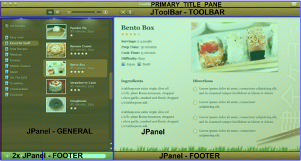
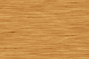
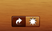
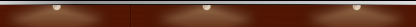

In the first step we have identified the decoration areas of Cookbook UI, and in the second step we mapped these areas to Substance decoration areas. The screenshot below shows the application decoration areas:

And the screenshot below shows an overlay of the Swing container hierarchy and the tagging of relevant containers associating them with the matching Substance decoration areas:
It is now time to implement the visuals of Cookbook decoration areas.
During the implementation stage you should strive to be as close as possible to the original design. While sometimes the technical limitations of the specific UI toolkit / library may prevent achieving the exact visuals and dynamic behavior as designed, you as the developer should not decide to change the design without providing feedback to the design team and waiting for the reworked visuals to implement.
As far as the implementation is concerned, a valid and in most cases simpler option would be to work on the image level. Most probably the design team uses a tool that allows compositing multiple layers into the final files that they are passing to the development. Those layers that represent decoration textures can be used directly to provide high-fidelity implementation. There is a number of important points to remember if you decide to go this route:
Another option is to implement the target design programmatically. While it is harder to achieve the exact visuals using pure code (even with such an advanced API as Java2D), this approach may be suitable for the programmers who are at ease with the APIs presented by the relevant layers. While the exact visuals will be most probably impossible to achieve, with the right amount of tweaking and feedback from the designers it is possible to arrive at a solution that satisfies both sides.
To show my appreciation of the power of Java2D (and as a programmer myself), this specific implementation is going to use pure code to achieve visuals that are significantly close to the target UI. To speed up the development process i'm going to use the excellent collection of filters available from Jerry Huxtable under the Apache 2.0 license.
The header and the footer portions of the Cookbook UI use a texture that
looks like a cross between brushed metal and wood. To implement this
texture, i'm using a combination of
BrushedMetalFilter and
LookupFilter to create a brushed
texture that is mapped to the colors of the relevant
Substance
color scheme (more on the color scheme selection in the next phase).
Here is the texture image that is going to be painted on top of the gradient fill:
The screenshot on the left shows a portion of Cookbook UI header area, and right next to it is its implementation with a custom Substance decoration painter based on the above filters:
The screenshot on the left shows a portion of Cookbook UI footer area, and right next to it is its implementation with a custom Substance decoration painter based on the above filters:
The sidebar of the Cookbook UI uses a fine-wood texture. To implement this
texture, i'm using a combination of
WoodFilter and
LookupFilter to create a wood
texture that is mapped to the colors of the relevant Substance
color scheme.
Here is the texture image that is going to be painted on top of the gradient fill:
The screenshot on the left shows a portion of Cookbook UI header area, and right next to it is its implementation with a custom Substance decoration painter based on the above filters:
As mentioned in the mapping step, the implementation must not expose the discrepancy between application and implementation areas. In our case, the sidebar spans two adjacent panels, and the footer spans three panels that don't even have the same immediate parent. It is absolutely critical not to let these details escape into the UI visuals. The visuals presented to the user must be seamless as though painted in the same step.
Considerations when using images are applicable for the pure Java2D implementation. If you're going to tile smaller images, you need to make sure that the edges are seamless. If you're going to create one big image, you need to query the toolkit and compute the combined bounds of all monitors (in this aspect it is easier to go pure-Java2D route than use images). Last, you need to anchor the images so that partial rendering does not result in sheared tiling.
The specific implementation uses APIs available on
GraphicsEnvironment,
GraphicsDevice,
GraphicsConfiguration to query
the monitor configuration and compute the combined bounds of all
monitors. The images created using filters thus cover the entire screen setup.
There are two disadvantages of doing so - longer computation time and
higher memory footprint. On the other hand, we do not need to worry about
tile edges. Also, large areas will be painted in one Java2D call, as opposed
to possibly multiple renderings of different areas of a smaller tile.
Last, the anchoring is done to the top-left corner of the application
window.
When the specific panel needs to be painted, we compute the offsets to the top-left corner of the application window. These offsets are then used to compute the area of the texture image to be painted on the panel. This ensures that even though the "perceived" (application) decoration area is implemented by multiple containers / components, the appearance is seamless and continuous.
The "light bar" of Cookbook UI proved to be the most challenging of the visuals. While it can be considered a tiled texture, it is explicitly anchored to a specific point in the window (the bottom-left corner of the light holder). While other textures (header, footbar) can be arbitrarily anchored (as long as all relevant areas use the same anchor point), this assumption does not hold here.
In addition, remember that the application sidebar is implemented as
two separate Swing panels that do not share the same immediate parent.
This is due to the functional restrictions detailed in the
first step. If we mark each one of these
panels as GENERAL,
we're going to store an explicit reference to the top part of the sidebar
(the light holder) in our decoration painter. This is not desirable
since it creates an explicit dependency between the skin and the application,
which may prove problematic if we want to reuse this skin in other
portfolio applications.
The solution presented in the second step
is to mark the center panel of the sidebar container as
GENERAL,
and mark the inner footer panels as FOOTER.
As the parent decoration area type is propagated to all children that
do not define their own type, the sidebar panels are painted with
GENERAL type. When the specific sidebar
panel is painted, we compute the offsets to the farthest container parent that
is decorated with GENERAL. These
offsets will effectively hold the distance to the bottom-left corner of the
custom component that implements the light holder visuals (more on this
in the next step).
Having these offsets in hand we can start tiling an image of a single light until we cover the entire width of the currently painted panel. This ensures that even though the sidebar application decoration area is implemented by multiple containers / components, the appearance of the light bar is seamless and continuous.
It might be easier to ask the designers to provide a single translucent image of a light bulb with the matching diffused light cone. The present implementation imitates this with a blurred mushroom shape with a translucent gradient applied to it. However, my recommendation would be to use an image-based approach for such fine visuals as this.
Here is the result of Java2D-based implementation of a single light:
The next screenshot shows the light bar area of the Cookbook UI:
And the Java2D-based implementation which is not as close as the other visuals presented in this step:
